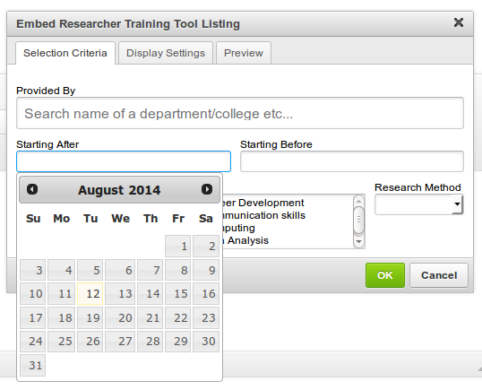
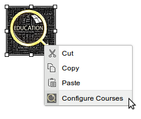

This plugin provides a user interface for configuring and embedding the Oxford Courses Widget (sometimes referred to as the Researcher Training Tool, as it is used to display courses for graduates and researchers).
-
Click on the Researcher Training Tool icon.

-
A dialog will appear, giving you the full configuration options for the training tool.
-
Selection Criteria
- Provided By: search for the department providing the course. Suggestions will appear as you type in the field. Click the correct result to ensure that the correct value is given.
-
Starting After/Before: select a range over which
the courses would be available. Leave these fields empty to show
courses from all time.

- Eligibility: select who the course will be available to: Staff Only, University Members or the Public. To select multiple fields, hold CTRL (or command for Mac users) while selecting options.
- Skill: select an area of expertise that the course asks for. Again, you can select multiple fields by holding CTRL (or command).
- Research Method: choose the type of research (if applicable) from either Quantitative or Qualitative.
-
Display Settings
- Title: title shown above the results table.
- Columns to display: select which columns should be available on the output table. You may select multiple fields.
- Default dates view: select whether or not (by default) dates are shwon with the results.
- Show without dates link: pick whether or not the dates link is shown.
Click the Preview tab to see how the widget will be output on the page.
-
-
When you are finished configuring the courses, click OK to embed the tool.

-
If you wish to configure the tool after emedding it, right-click the placeholder and click "Configure Courses".
